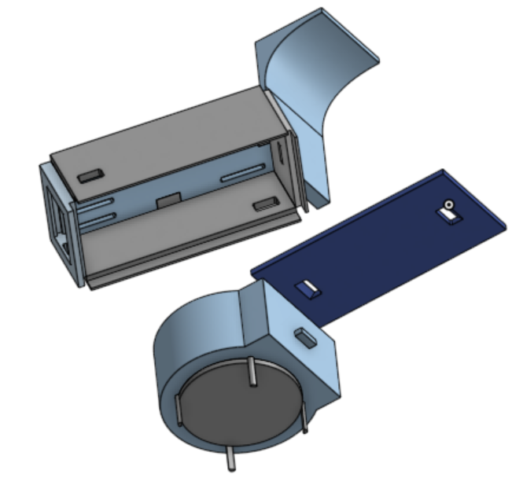
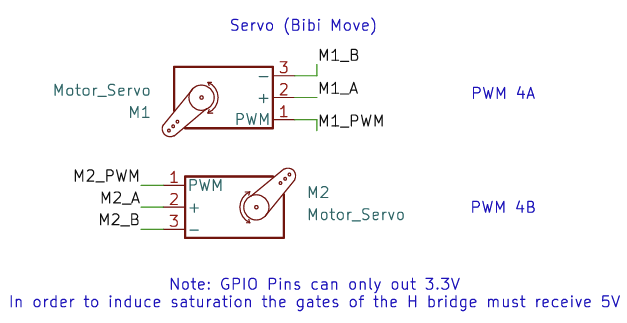
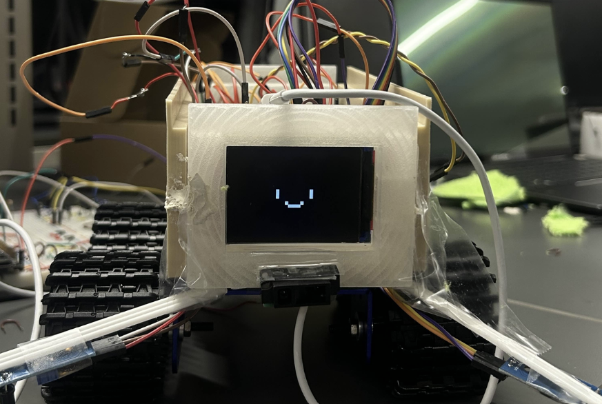
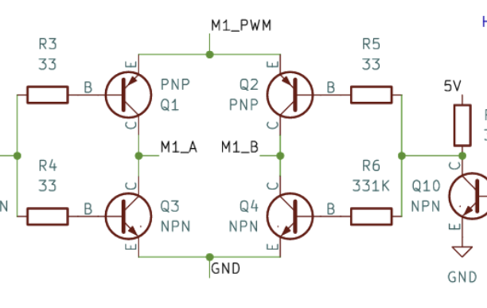

Bibi: Benchtop Buddy




Bibi was designed to be a benchtop autonomous cleaning robot. Equipped with IR and ultrasonic sensors, Bibi can explore your desktop and dust, wipe, and collect debris. Bibi is powered by a Raspberry Pi on the Purdue Proton board, and runs C code to control its motors and sensors. The robot is designed to be modular, allowing for easy upgrades and maintenance.
Although Bibi couldn't fully be let loose on our desks, we learned a lot during the hardware development phase. Building chips from the ground up (I'm looking at you H-bridge) stole time and caused unforseen issues, albeit was an extremely fun experience. And NPN transistors aren't just your ordinary switch (don't let them fool you).
Check out the source code at this github link.